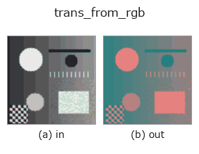

color op• 데이터 종류: color → color
• 호출: fullseye.apply(img, "trans_from_rgb", a=0.5, b=0.5)(2-D 는 이미지 1 장 + 스칼라 노브 2 개 a,b∈[0,1] 모델)
• HALCON 대응: trans_from_rgb(의미·매개변수는 HALCON 레퍼런스가 참고가 됩니다)

*그림은 128×128 합성 입력에서 실제로 실행한 출력. 왼쪽이 입력, 오른쪽이 출력. 점군은 위에서 본 산점도(밝기 = z), 1-D 열은 꺾은선, 볼륨은 z 방향 최대값 투영, 동영상은 가운데 프레임, 복소 영상은 진폭이며, 그림이 되지 않는 반환값은 값 자체를 표시한다.*
노브 a 를 훑기(0.1 / 0.5 / 0.9, 다른 노브는 기본값):
▸ trans_from_rgb: knob a sweep (docs site)
*노브 b 는 출력을 바꾸지 않는다(실측: 0.1 / 0.5 / 0.9에서 동일).*
단계(앞에 오는 op → 이 op, 왼쪽에서 오른쪽으로):
▸ trans_from_rgb: stages (docs site)
다른 영상에서도(합성 장면 / 사진 / 동전. 윗줄이 입력, 아랫줄이 그 출력. 노브는 기본값):
▸ trans_from_rgb: other inputs (docs site)
RGB 이미지를 다른 색 공간(HSV / Lab / YUV / XYZ)으로 변환한다. HALCON의 `trans_from_rgb`(RGB 색 공간에서 임의의 색 공간으로의 변환)에 해당한다.
> 아래 상세 설명은 원문입니다 —— 요약과 제목은 번역되어 있습니다.
内部は OpenCV の `cv2.cvtColor` を 8bit 経由で呼ぶだけで、変換先の
色空間そのものの定義は OpenCV の実装に従う。
a は変換先を 4 通り（HSV, Lab, YUV, XYZ の順）から選ぶ
（`min(3, int(a * 4))`）。b は未使用。8bit 量子化を経由するため、
逆変換（`trans_to_rgb`）と組み合わせても厳密には可逆でない。
• gallery2d_color_artistic 패밀리 가이드
• colorimetry — 測色と分光の知識 — 色は「分光 × 光源 × 観測者」でしか決まらない
• 샘플 데이터 카탈로그(DL URL / 라이선스) —— 2-D 는 skimage.data(BSD/public)+ 합성, 3-D 는 실데이터 소스(Stanford/PDS 등)의 DL URL.
• 연산자의 내력·참고문헌 —— 이 연산자 족의 바탕이 된 연구/기법의 출처.
• 알고리즘의 정전(저자·연도)과 용도는 위의 패밀리 사용 가이드에 적혀 있습니다.
아래 프로그램은 실제로 실행됨을 확인했습니다(그림과 같은 입력). Studio 도움말에서는 이 블록이 버튼이 되어 즉시 불러와 실행할 수 있습니다.
cfa_to_rgb 0.50 0.50 trans_from_rgb 0.50 0.50
▸ Load this pipeline · Load & run
• gallery2d_color_artistic — py -3.11 examples/gallery2d_color_artistic.py
• poc_leaf_disease_area — py -3.11 examples/poc_leaf_disease_area.py
color 를 입력으로 받는 것)identity · trans_to_rgb · linear_trans_color · principal_comp · rgb1_to_gray · rgb3_to_gray · access_channel · edges_color
color)cfa_to_rgb · trans_to_rgb · linear_trans_color · principal_comp · rgb1_to_gray · rgb3_to_gray · access_channel
*Provenance: ops.py — 2D 연산자 레지스트리. 이 op 노트는 tools/opdocs.py md 가 자동 생성합니다(직접 편집하지 마세요).*
© 2026 Kazufumi Furuse — Fullseye operator documentation. Licensed under Apache-2.0.
{kind=link}
{kind=link}
{kind=link}